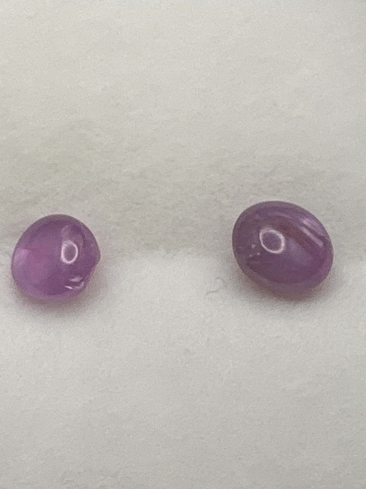

The Gem Drawer › No. 91

Two cabochons labeled star ruby that are lavender-pink, with no clear star.
| Catalogue no. | #91 |
|---|---|
| As labeled | Label says "Star Burma Ruby" - MISMATCH: stones appear lavender/purple-pink, not red; possible sapphire or other material; no clear star visible - see notes |
| Shape / cut | Cabochon (both stones) |
| Weight | 1.00-1.75 (range per label; unclear if per-stone or combined - see notes) |
| Measurements | Not recorded |
| Colour | Lavender/purple-pink as photographed (not red - see notes) |
| Clarity / condition | Not recorded |
Interested in this stone, or in the collection as a whole? Terry VanWormer can answer questions about it.
Click here to inquireor email Terry directly at maxrebo34@gmail.com